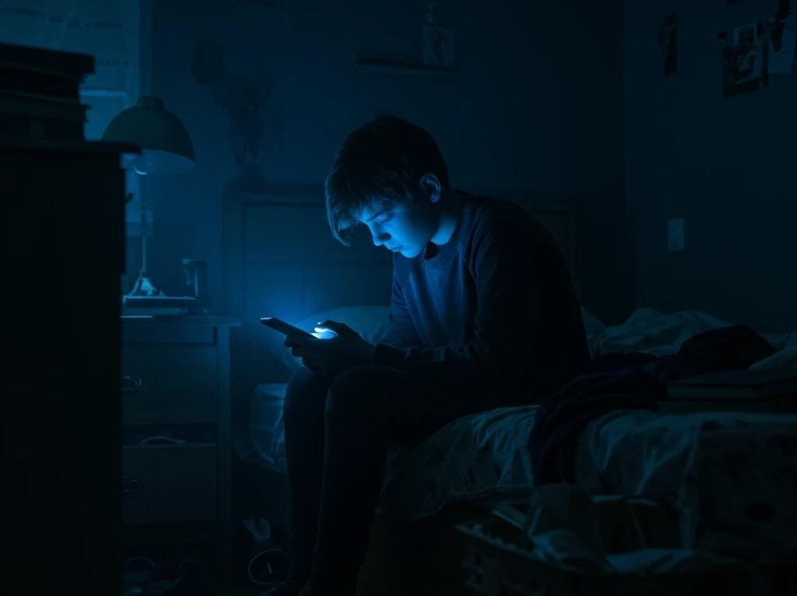
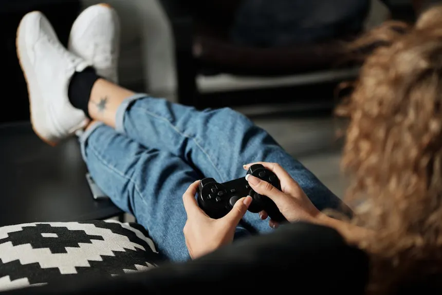
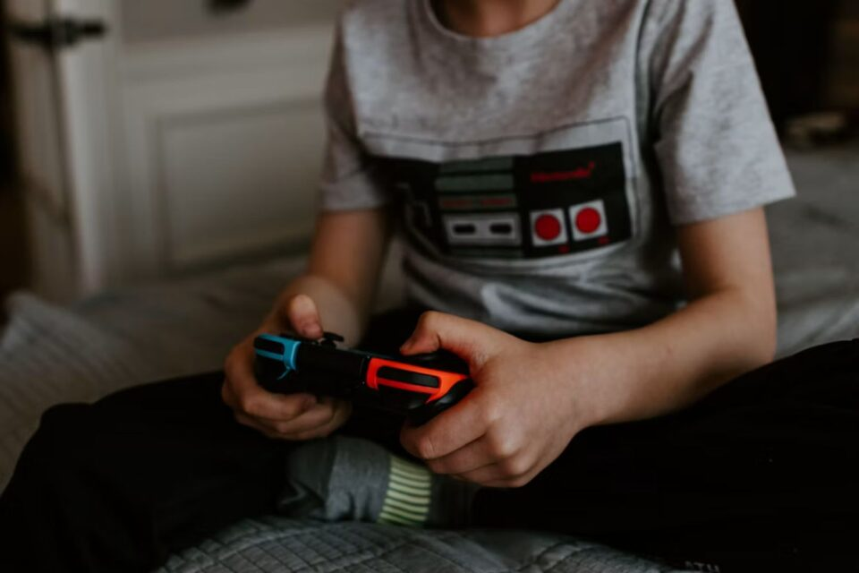
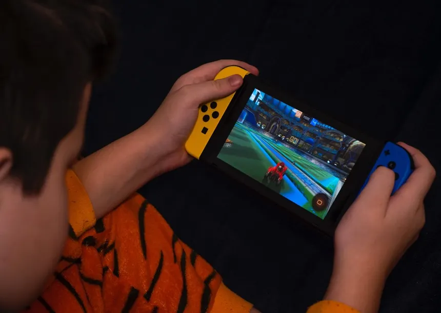
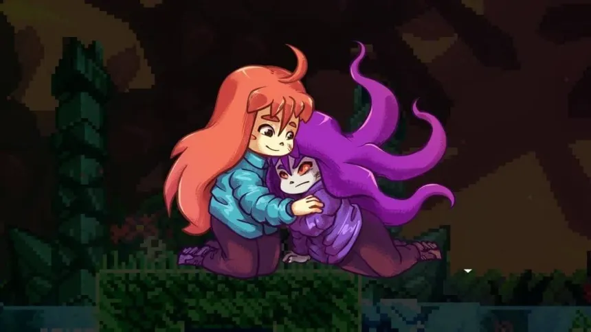

Um jogo pode ser motivo de preocupação para uma família, ou pode ser a ferramenta que ajuda alguém a atravessar um luto. Os games ocupam esse espaço contraditório: são acusados de causar isolamento e vício, mas também usados em terapias e no desenvolvimento cognitivo e emocional de quem joga. Neste site reunimos esses dois lados: os riscos e os benefícios que os games podem trazer.
Pontos negativos

vício é um dos principais problemas dos jogos, principalmente nos on-line, que costumam ser partidas rápidas e com diversas informações na tela, sendo uma fonte fácil de dopamina. Alguns jogos possuem as loot boxes, que são um agravante para essa compulsão, pois envolvem apostas e dinheiro na grande maioria das vezes.
Vindo desse quadro, temos o sedentarismo, que facilita a obesidade e na falta de atividades físicas, agravando diversos outros problemas de saúde, má postura, dores e em alguns casos, a síndrome do olho seco, causado pela luminosidade e danos à audição pelo volume alto nos fones.
Outro problema que o excesso de luz e o uso excessivo podem acarretar, é o distúrbio do sono, causado principalmente por jogar até tarde da noite. A luz azul produzida pelas telas prejudica muito o sono, afetando a qualidade, desempenho cognitivo e podendo causar até irritabilidade.

Com as várias horas sentado, apenas jogando, pode gerar certa dependência digital, fazendo com que o indivíduo se isole do mundo real, e viva apenas o virtual, podendo ocasionar em uma ansiedade social, depressão etc.
Pontos positivos


O uso terapêutico dos jogos pode ser algo chocante, já que as telas são frequentemente culpadas por certos problemas, porém, estudos como o da JAMA Network mostraram que se usado de maneira correta, jogos podem ajudar no tratamento da depressão e de outras condições emocionais. No estudo, foi utilizado um jogo educativo chamado PlaySmart, que foi testado em 532 estudantes do ensino médio. Porém, é importante dizer que nem todo jogo está apto para fins terapêuticos, outro estudo, feito com um programa diferente, apresentou redução no estigma sobre saúde mental, porém uma redução apenas modesta nos sintomas depressivos.

Além da ajuda na saúde mental, jogos podem ajudar também no desenvolvimento cognitivo e social, as pesquisadoras da UFSC estudaram justamente isso, e ao longo de 4 semanas, perceberam que jogos cognitivos auxiliaram crianças (8-11 anos) a melhorar o autocontrole, atenção e resolução de problemas. Em outro estudo, feito por um grupo de psicólogos, foi mostrado que jogos como RPG podem ser usados para desenvolver habilidades socio-emocionais em crianças e adolescentes, auxiliando também na melhora das funções executivas, um déficit presente no TDAH, e na adesão às práticas esportivas, que é muito importante no tratamento da ansiedade.

Alguns jogos também trazem a representação e compreensão emocional. Um deles é o Celeste, um jogo indie e de plataforma, onde Madeline, a protagonista, decide escalar a montanha Celeste, e durante esse percurso enfrenta uma versão "maligna" de si mesma, a Badeline, que nada mais é que uma representação de suas inseguranças, e que tenta desmotivá-la durante o percurso, tentando fazê-la desistir, sendo uma clara metáfora para a ansiedade e autossabotagem. Sua jornada na montanha é uma luta pela sua saúde mental e aceitação de quem ela realmente é. Há diversos outros jogos como esse e, na próxima página, falaremos mais sobre eles.